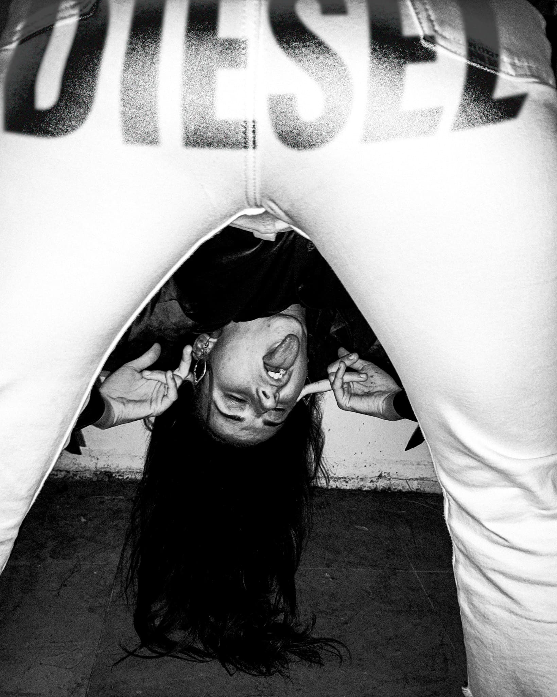
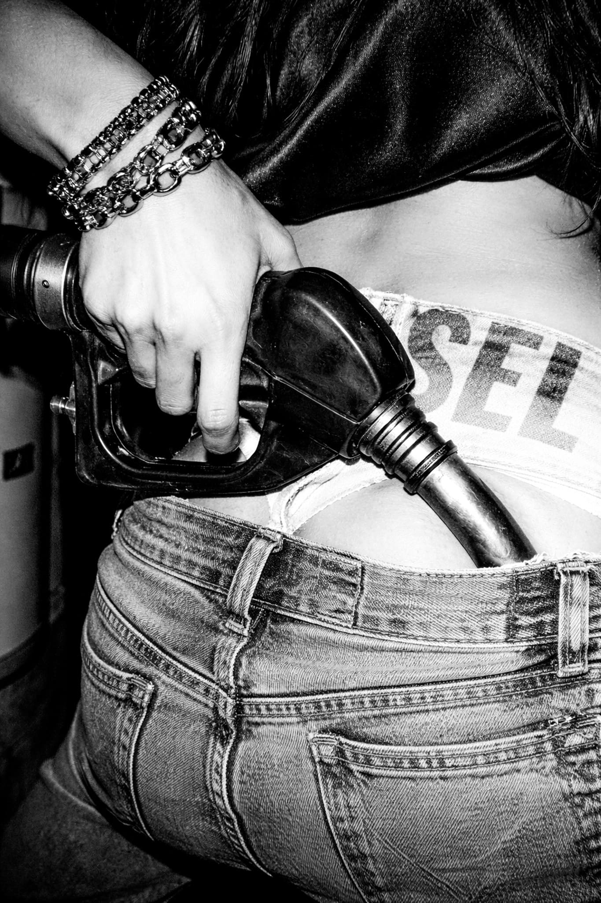
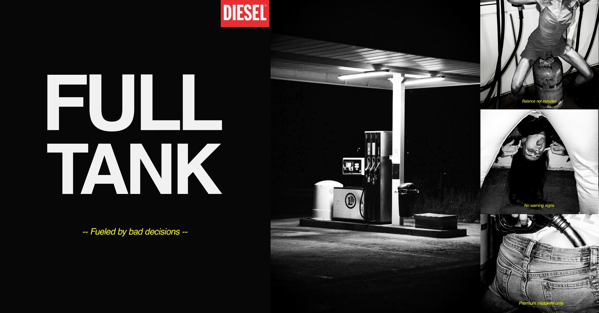
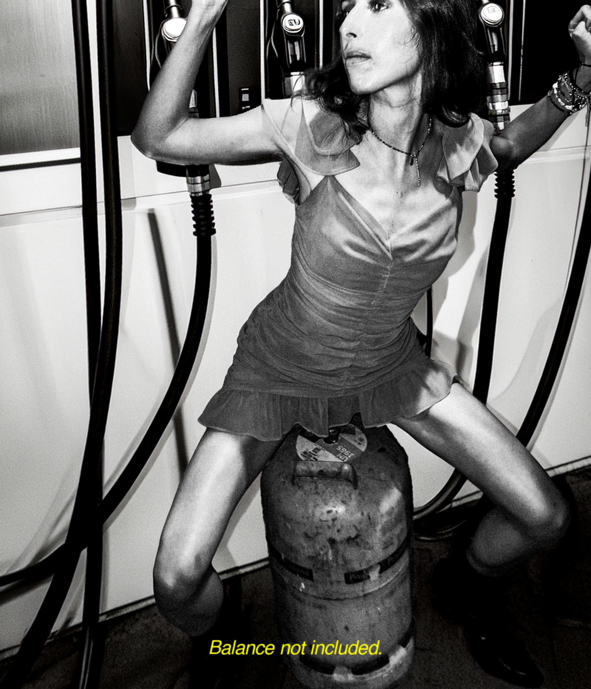
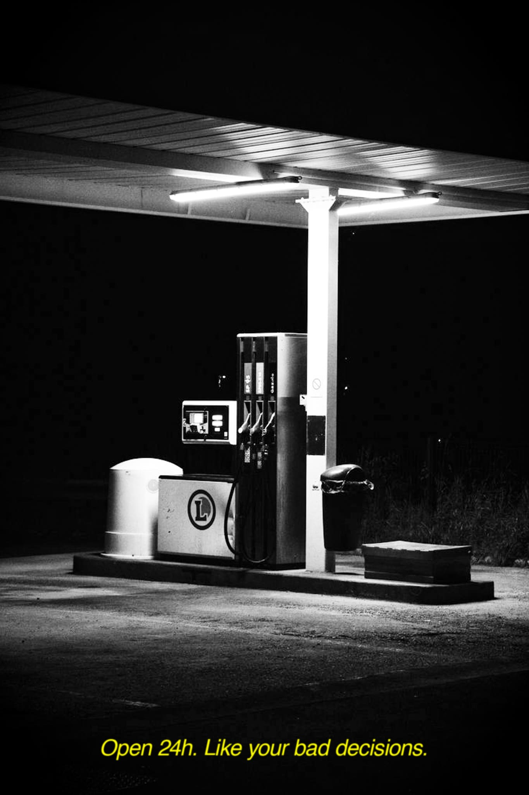
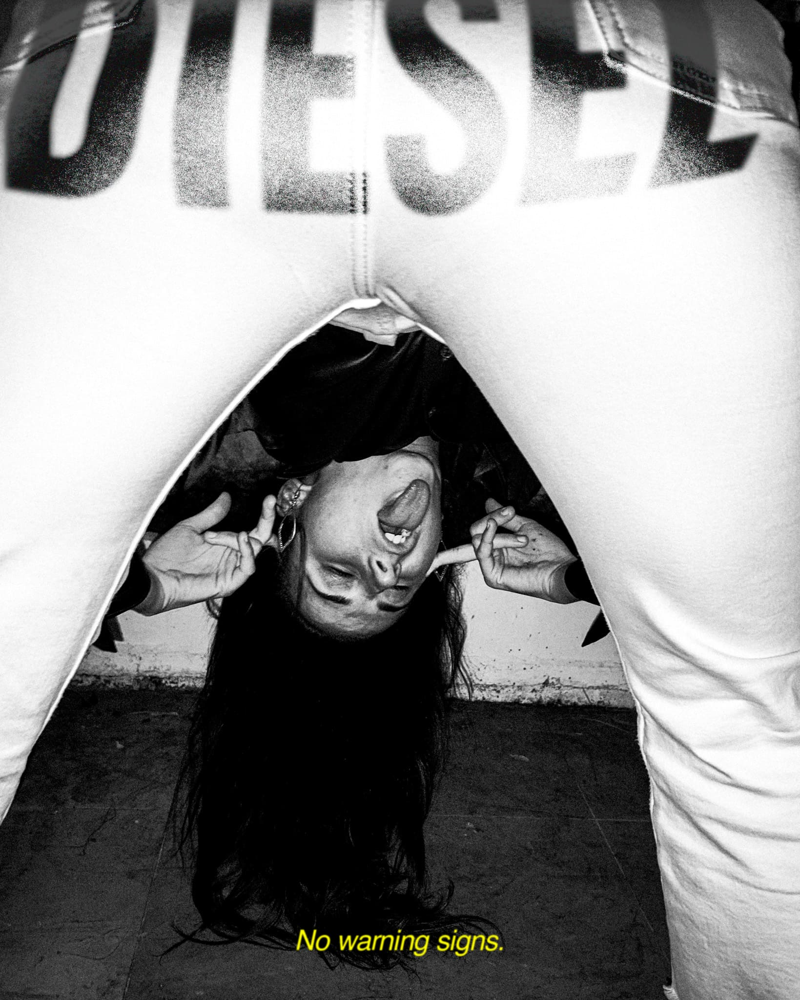
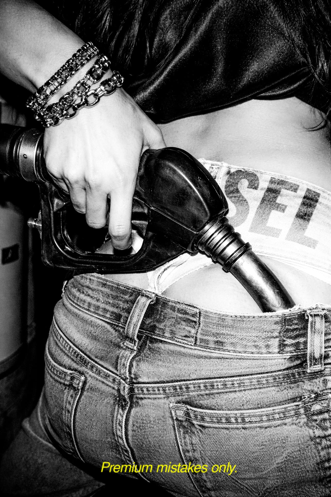

DieselxKlein
FULL TANK. Fueled by bad decisions.
Una reinterpretación del lenguaje visual provocador de Diesel que explora el impulso, la actitud y la estética de las malas decisiones.




Concepto
Full Tank explora la estética provocadora asociada históricamente a Diesel, donde el impulso y la actitud tienen más peso que la corrección. La campaña gira en torno a la idea de las bad decisions: acciones impulsivas, noches largas y comportamientos que ignoran cualquier señal de advertencia. La gasolina funciona como metáfora visual de esa energía desbordada que impulsa a actuar sin pensar demasiado.

Dirección visual
La referencia es el lenguaje fotográfico asociado a William Klein: blanco y negro, flash directo, encuadres que incomodan a propósito. El cuerpo se trata como un elemento performativo más que como un sujeto posado, hay tensión, hay gesto, hay algo que está a punto de pasar. Es una dirección de arte deliberadamente cruda, pensada para destacar en un feed sin pedir permiso.




Sistema de campaña
La secuencia de imágenes alterna escalas: un plano general que sitúa la escena, seguido de primeros planos sobre cuerpo, gesto y detalle, como si la cámara persiguiera la acción en tiempo real. Los copys actúan como comentarios irónicos en segunda persona, manteniendo el tono provocador sin caer en el insulto gratuito. Esta estructura (plano general → detalle → copy) es replicable para nuevas piezas sin perder la lógica de la campaña.
Más proyectos

Sala de Juntas
El Faro del Bosque — OI26
Campaña OT/IN 2026 para El Faro del Bosque, boutique multimarca en Madrid. Un guiño mid-century a Mad Men y Good Girls Revolt: mujeres que ocupan, con calma y con estilo, los despachos que nunca se pensaron para ellas.


Alhaja
Como diría mi abuela...
Creamos joyas artesanales que no solo se llevan, se sienten. Objetos que se convierten en símbolos de lo que somos y sentimos. Cada pieza es un recuerdo heredado y reinventado.